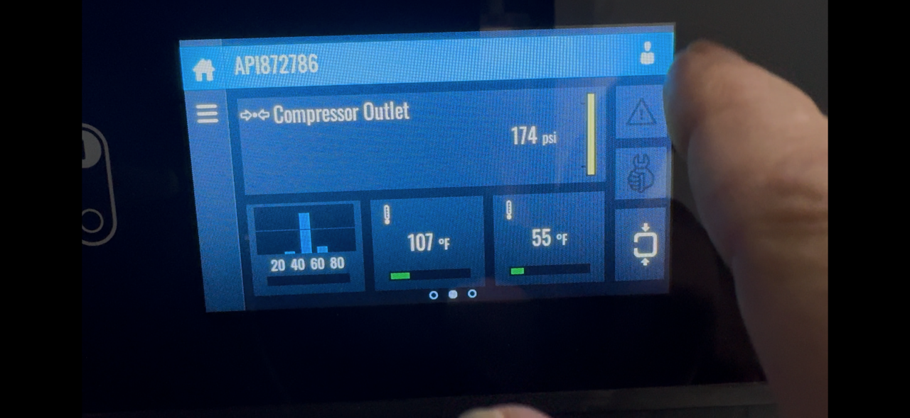
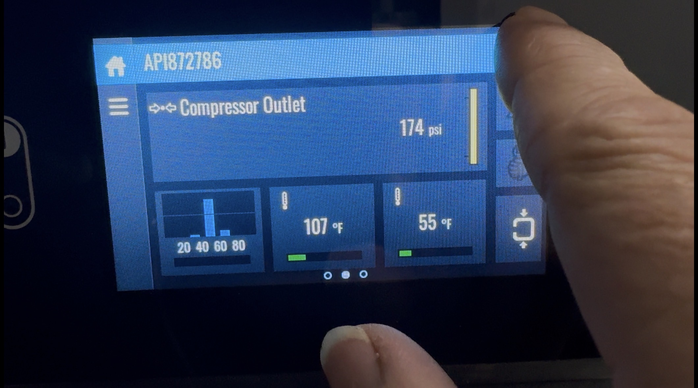
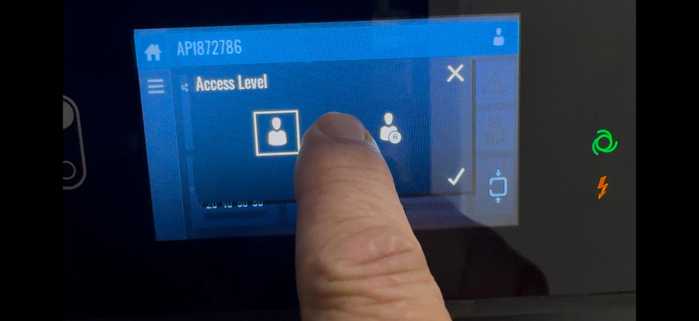
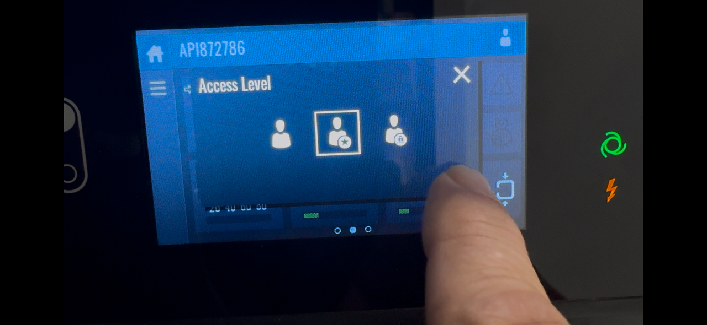

Purpose
- Enter Advanced User mode while in Standby
- Exit the mode safely after completing tasks
Access Levels
- Basic. Standard operator interface
- Advanced. Restricted operational functions
- Service. Manufacturer or maintenance access only
Entering Advanced User Mode
- Start on the Home screen
- Select the user icon in the top right corner
- Choose Advanced user level
- Confirm using the checkmark




Validation
- User indicator displays Advanced with a star symbol
- Additional menus appear in the interface
Rules While in Advanced Mode
- Do not modify control parameters
- Do not access Service menus
- Follow approved written procedures only
Advanced mode grants expanded control access.
Incorrect changes lead to equipment trips or damage.